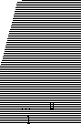

A 10-foot ladder is leaning against a vertical wall. The top of the ladder touches the wall at a point 8 feet above the ground. The base of the ladder slips 1 foot away from the wall.
Column A
1
Column B
The distance the top of the ladder slides down the wall